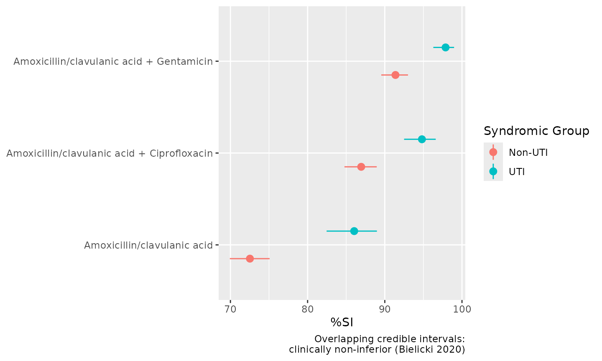
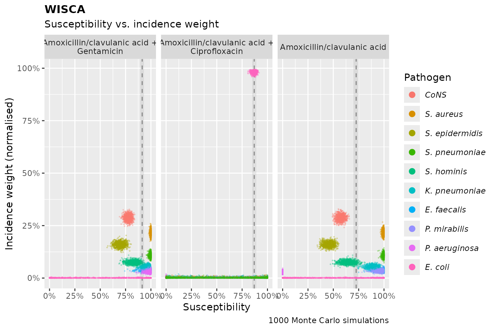
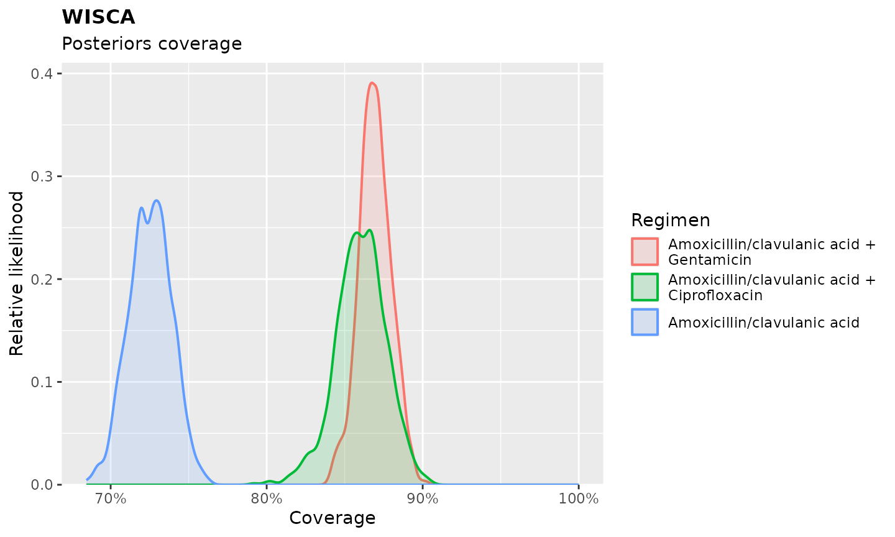

Why WISCA?
When a clinician starts empirical antimicrobial therapy, the causative pathogen is unknown. The question they need answered is not “what proportion of E. coli is susceptible to ciprofloxacin?“ but rather “what is the probability that this regimen will adequately cover whatever pathogen turns out to be causing my patient’s infection?”
The traditional cumulative antibiogram, as standardised by CLSI M39, cannot answer that question. It presents susceptibility percentages per species per antibiotic, but:
- It fragments information by organism. The clinician must mentally combine susceptibility rates across multiple species, weighting by how often each species causes the syndrome, a calculation nobody does at the bedside.
- It ignores pathogen incidence. A species that causes 2% of infections is given the same visual weight as one that causes 60%.
- It does not evaluate combination regimens. Much empirical therapy consists of two or more agents, but the traditional antibiogram only shows monotherapy per organism.
- It provides no measure of uncertainty. A reported “90% susceptible” based on 50 isolates has a 95% confidence interval of roughly 78-97% (Clopper-Pearson), yet the antibiogram presents it as a point estimate without context.
WISCA (Weighted-Incidence Syndromic Combination Antibiogram) resolves all four limitations. It estimates the probability that a regimen will provide adequate empirical coverage for a given infection syndrome, weighted by local pathogen incidence, with full uncertainty quantification via Bayesian inference.
The concept was introduced by Hebert et al. (2012), who demonstrated that traditional antibiogram susceptibility rates could be misleading: ciprofloxacin appeared 84% effective against E. coli in the traditional antibiogram, but WISCA revealed only 62% coverage for UTI and 37% for abdominal infections, because enterococci (intrinsically resistant) and other species contribute substantially to these syndromes. Randhawa et al. (2014) showed that WISCA-guided regimen selection could improve time-to-adequate-coverage on the ICU by over 40%. Bielicki et al. (2016) introduced the Bayesian framework now used in this package, enabling credible intervals and multi-centre pooling. Cook et al. (2022) applied it globally across 52 hospitals in 23 countries.
The idea
WISCA asks:
“What is the probability that this regimen will cover the pathogen, given the syndrome?”
This means combining two quantities:
- Pathogen incidence in the syndrome (how often each species causes it),
- Susceptibility of each pathogen to the regimen.
We can write this as:
For example, suppose in your hospital:
- E. coli causes 60% of UTIs, and 90% of E. coli are susceptible to a drug.
- Klebsiella causes 40% of UTIs, and 70% of Klebsiella are susceptible.
Then:
That 82% is a far more clinically meaningful number than the species-level “90% of E. coli” and “70% of Klebsiella” reported separately in a traditional antibiogram, because it directly answers the question the clinician actually faces.
But in real data, both incidence and susceptibility are estimated from finite samples, so they carry uncertainty. A sample of 50 isolates is not a census. WISCA models this uncertainty probabilistically, using conjugate Bayesian distributions.
The Bayesian engine
Pathogen incidence
Let:
- be the number of pathogens,
- be a prior (uniform, non-informative),
- be the observed isolate counts per species.
Then the posterior incidence is:
To simulate from this, we use:
The Dirichlet is the conjugate prior for multinomial data. With the non-informative prior , the posterior is dominated by the data once sample sizes are reasonable. With small samples, the posterior is appropriately more diffuse, reflecting genuine uncertainty, and the resulting credible intervals will be wider.
Susceptibility
Each pathogen-regimen pair has a prior and observed data:
- Default prior: (Jeffreys prior)
- Intrinsically resistant pairs: , forcing near-zero susceptibility regardless of observed data (based on EUCAST Expected Resistant Phenotypes)
- Data: susceptible out of tested
The category could also include values SDD (susceptible, dose-dependent) and I (intermediate [CLSI], or susceptible, increased exposure [EUCAST]).
Then the posterior is:
Final coverage estimate
Putting it together:
- Simulate pathogen incidence:
- Simulate susceptibility:
- Combine:
Repeat this simulation (e.g., 1000 times) and summarise:
- Mean = expected coverage
- Quantiles = credible interval (95% by default)
Because each simulation draws from the full posterior, the resulting distribution of coverage estimates naturally captures the joint uncertainty in both pathogen incidence and susceptibility. The credible interval tells you how confident you can be in the coverage estimate, something a traditional antibiogram never provides.
When to use WISCA vs. traditional antibiograms
| Goal | Recommended approach |
|---|---|
| Guide empirical therapy decisions | WISCA |
| Compare regimens for a syndrome | WISCA |
| Evaluate combination regimens | WISCA |
| Antimicrobial stewardship (A-team) | WISCA |
| Track resistance trends per species | Traditional / Combination |
| AMR surveillance reporting | Traditional / Syndromic |
| Understand species-level epidemiology | Traditional |
In short: if the end goal involves a patient who does not yet have a culture result, WISCA is the appropriate tool. If the end goal is surveillance of resistance at the species level, the traditional antibiogram remains fit for purpose.
Practical use in the AMR package
Prepare data
library(AMR)
data <- example_isolates
# Structure of our data
data
#> # A tibble: 2,000 × 46
#> date patient age gender ward mo PEN OXA FLC AMX
#> <date> <chr> <dbl> <chr> <chr> <mo> <sir> <sir> <sir> <sir>
#> 1 2002-01-02 A77334 65 F Clinical B_ESCHR_COLI R NA NA NA
#> 2 2002-01-03 A77334 65 F Clinical B_ESCHR_COLI R NA NA NA
#> 3 2002-01-07 067927 45 F ICU B_STPHY_EPDR R NA R NA
#> 4 2002-01-07 067927 45 F ICU B_STPHY_EPDR R NA R NA
#> 5 2002-01-13 067927 45 F ICU B_STPHY_EPDR R NA R NA
#> 6 2002-01-13 067927 45 F ICU B_STPHY_EPDR R NA R NA
#> 7 2002-01-14 462729 78 M Clinical B_STPHY_AURS R NA S R
#> 8 2002-01-14 462729 78 M Clinical B_STPHY_AURS R NA S R
#> 9 2002-01-16 067927 45 F ICU B_STPHY_EPDR R NA R NA
#> 10 2002-01-17 858515 79 F ICU B_STPHY_EPDR R NA S NA
#> # ℹ 1,990 more rows
#> # ℹ 36 more variables: AMC <sir>, AMP <sir>, TZP <sir>, CZO <sir>, FEP <sir>,
#> # CXM <sir>, FOX <sir>, CTX <sir>, CAZ <sir>, CRO <sir>, GEN <sir>,
#> # TOB <sir>, AMK <sir>, KAN <sir>, TMP <sir>, SXT <sir>, NIT <sir>,
#> # FOS <sir>, LNZ <sir>, CIP <sir>, MFX <sir>, VAN <sir>, TEC <sir>,
#> # TCY <sir>, TGC <sir>, DOX <sir>, ERY <sir>, CLI <sir>, AZM <sir>,
#> # IPM <sir>, MEM <sir>, MTR <sir>, CHL <sir>, COL <sir>, MUP <sir>, …
# Add a synthetic syndrome column for demonstration
data$syndrome <- ifelse(data$mo %like% "coli", "UTI", "Non-UTI")
# Keep only 10 most common microorganisms
data <- top_n_microorganisms(data, n = 10, property = "species")
#> ℹ Using column mo as input for `col_mo`.Basic WISCA
| Amoxicillin/clavulanic acid | Ciprofloxacin | Gentamicin |
|---|---|---|
| 76.8% (74.7-79.1%) | 81.5% (78.9-84.1%) | 82.9% (81-84.8%) |
Use combination regimens
Combination regimens are specified with a + separator.
WISCA evaluates whether at least one agent in the combination
covers the pathogen:
| Amoxicillin/clavulanic acid | Amoxicillin/clavulanic acid + Ciprofloxacin | Amoxicillin/clavulanic acid + Gentamicin |
|---|---|---|
| 76.8% (74.6-78.9%) | 89.6% (88-91.1%) | 93.7% (92.5-94.9%) |
Stratify by syndrome
Use syndromic_group to produce separate WISCA estimates
per clinical stratum. You can pass a column name or any expression:
wisca_out <- wisca(data,
antimicrobials = c("AMC", "AMC + CIP", "AMC + GEN"),
syndromic_group = "syndrome"
)
wisca_out| Syndromic Group | Amoxicillin/clavulanic acid | Amoxicillin/clavulanic acid + Ciprofloxacin | Amoxicillin/clavulanic acid + Gentamicin |
|---|---|---|---|
| Non-UTI | 72.5% (69.9-75.1%) | 86.9% (84.8-89%) | 91.4% (89.5-93%) |
| UTI | 86% (82.5-89%) | 94.8% (92.5-96.6%) | 97.9% (96.3-99%) |
The AMR package is available in 28 languages, which can
all be used for the wisca() function too:
wisca(data,
antimicrobials = c("AMC", "AMC + CIP", "AMC + GEN"),
syndromic_group = gsub("UTI", "UCI", data$syndrome),
language = "Spanish"
)| Grupo sindrómico | Amoxicilina/ácido clavulánico | Amoxicilina/ácido clavulánico + Ciprofloxacina | Amoxicilina/ácido clavulánico + Gentamicina |
|---|---|---|---|
| Non-UCI | 72.6% (69.9-75.3%) | 87% (84.9-89.1%) | 91.4% (89.7-92.9%) |
| UCI | 86% (82.7-89%) | 94.8% (92.7-96.4%) | 97.9% (96.5-99%) |
Interpreting the output
Each row shows the estimated empirical coverage for a regimen, with a 95% credible interval. When comparing regimens:
- Overlapping credible intervals mean there is no statistically significant difference in coverage. If a narrower-spectrum regimen overlaps with a broader one, the narrower-spectrum option can be preferred on stewardship grounds.
- Non-overlapping credible intervals indicate a clinically meaningful difference in coverage.
Plotting
WISCA results can be visualised in several ways. All plot functions
work on the output of wisca() (or
antibiogram(..., wisca = TRUE)).
Below we use the wisca_out object that was generated
above.
Coverage with credible intervals
The extended autoplot() method from the
ggplot2() package produces a point-and-interval plot
showing the coverage estimate and 95% credible interval for each
regimen, grouped by syndromic stratum. This is the most direct way to
compare regimens: overlapping intervals suggest clinical
non-inferiority, non-overlapping intervals indicate a meaningful
difference.
ggplot2::autoplot(wisca_out)
Susceptibility vs. incidence weight
wisca_plot() produces a scatter plot of the Monte Carlo
simulation draws, showing each pathogen’s susceptibility (x-axis)
against its incidence weight (y-axis) for each regimen. Each dot
represents one of 1,000 simulated draws, so the spread reflects
posterior uncertainty. This plot reveals why a regimen achieves
its coverage: you can see which pathogens dominate the syndrome (high on
the y-axis), how susceptible they are (position on the x-axis), and how
uncertain both estimates are (spread of the cloud). The dashed vertical
lines denote the point estimates, i.e., the coverage percentages. The
ribbon behind the dashed lines denote the credible interval, which is
95% at default.
wisca_plot(wisca_out)
Posterior coverage distributions
Setting wisca_plot_type = "posterior_coverage" shows the
full posterior distribution of coverage for each regimen as a density
curve. This is the most complete representation of what the Bayesian
model produces: each curve shows the relative likelihood of each
coverage value across all 1,000 simulations. Narrow, tall peaks indicate
high certainty; wide, flat curves indicate greater uncertainty. Where
two curves overlap, the regimens cannot be confidently
distinguished.
wisca_plot(wisca_out, wisca_plot_type = "posterior_coverage")
Sensible defaults, which can be customised
-
simulations = 1000: number of Monte Carlo draws -
conf_interval = 0.95: coverage interval width -
combine_SI = TRUE: count “I” and “SDD” as susceptible
Practical considerations
-
First isolates only: always deduplicate using
first_isolate()before running WISCA. Repeat isolates introduce bias. -
Pathogen selection: consider filtering with
top_n_microorganisms(). Including rare contaminants (e.g. CoNS without clinical context) can distort estimates and may artificially lower coverage (Cook et al., 2022). - Sample size: coverage estimates become reliable with approximately 100+ isolates. For smaller datasets, consider pooling data from multiple sites, but only after verifying that pathogen distributions are sufficiently similar (Bielicki et al., 2016).
- Culture request bias: WISCA is only as good as the data it is based on. If cultures are selectively requested (e.g. only after treatment failure), the dataset will be biased towards resistant isolates. A robust culture policy is essential for reliable estimates.
Limitations
- It assumes your data are representative of the patient population you are treating
- No direct adjustment for patient-level covariates, although these
can be passed onto the
syndromic_groupargument for stratification - WISCA does not model resistance trends over time; for that, you
might want to use
tidymodels, for which we wrote a basic introduction
Summary
WISCA enables:
- Empirical regimen comparison, answering the clinician’s actual question
- Syndrome-specific coverage estimation, stratifiable by any clinical variable
- Fully probabilistic interpretation, with credible intervals that honestly communicate uncertainty
It is available in the AMR package via either:
wisca(...)
antibiogram(..., wisca = TRUE)References
- Hebert C, Ridgway J, Vekhter B, Brown EC, Weber SG, Robicsek A. Demonstration of the weighted-incidence syndromic combination antibiogram: an empiric prescribing decision aid. Infect Control Hosp Epidemiol. 2012;33(4):381-388. https://doi.org/10.1086/664768
- Randhawa V, Sarwar S, Walker S, Elligsen M, Palmay L, Daneman N. Weighted-incidence syndromic combination antibiograms to guide empiric treatment of critical care infections: a retrospective cohort study. Crit Care. 2014;18(3):R112. https://doi.org/10.1186/cc13901
- Bielicki JA, Sharland M, Johnson AP, Henderson KL, Cromwell DA. Selecting appropriate empirical antibiotic regimens for paediatric bloodstream infections: application of a Bayesian decision model to local and pooled antimicrobial resistance surveillance data. J Antimicrob Chemother. 2016;71(3):794-802. https://doi.org/10.1093/jac/dkv397
- Cook A, Sharland M, Yau Y, Bielicki J. Improving empiric antibiotic prescribing in pediatric bloodstream infections: a potential application of weighted-incidence syndromic combination antibiograms (WISCA). Expert Rev Anti Infect Ther. 2022;20(3):445-456. https://doi.org/10.1080/14787210.2021.1967145